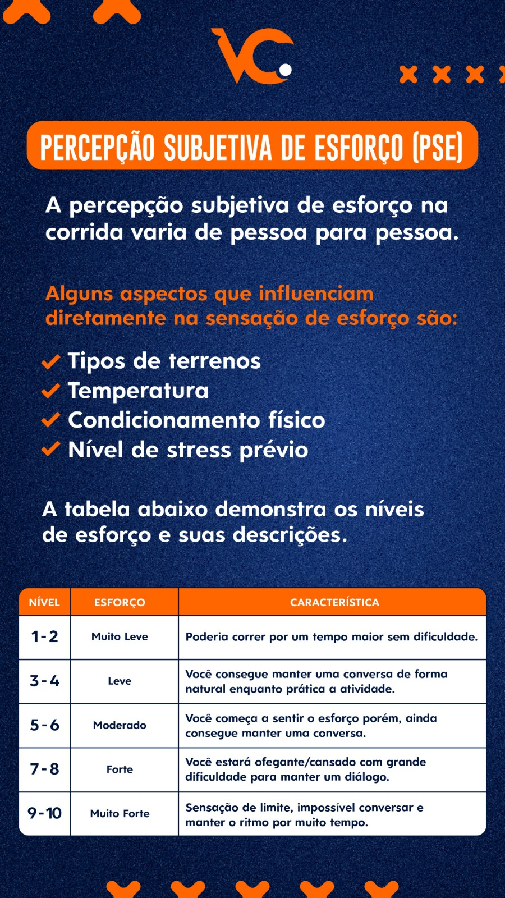
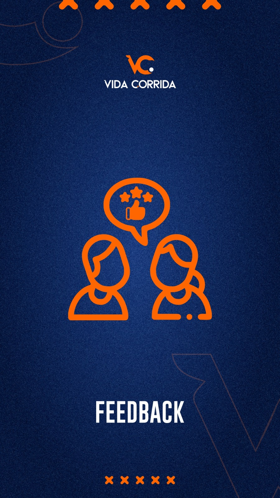

Entenda como a sensação do esforço muda conforme o treino e o seu momento.
VIDA CORRIDA
"Os desafios nos definem."
Guia do Atleta
Potencialize sua experiência de corrida
Aqui você acessa dicas e informações que irão potencializar sua experiência de corrida.
Acesso rápido
Consulte a Percepção Subjetiva de Esforço (PSE), entre no grupo do Strava, baixe a cartilha da assessoria e não esqueça de enviar seus feedbacks ao treinador.
Acompanhe o grupo da assessoria no Strava e mantenha a motivação em alta.
Tenha um material centralizado com as principais informações da assessoria.
Compartilhe com o treinador como o treino foi na prática para ajustar o planejamento.
PSE
Percepção Subjetiva de Esforço

A percepção subjetiva de esforço na corrida varia de pessoa para pessoa. Ela ajuda a interpretar como o corpo está respondendo ao treino no dia.
Alguns aspectos que influenciam diretamente a sensação de esforço são:
- Tipos de terrenos.
- Temperatura.
- Condicionamento físico.
- Nível de estresse prévio.
Use a PSE junto com a orientação do treino. Se um treino leve estiver parecendo moderado ou forte demais, vale avisar o treinador para interpretar melhor o contexto.
| Nível | Esforço | Característica |
|---|---|---|
| 1-2 | Muito leve | Poderia correr por um tempo maior sem dificuldade. |
| 3-4 | Leve | Você consegue manter uma conversa de forma natural enquanto pratica a atividade. |
| 5-6 | Moderado | Você começa a sentir o esforço, porém ainda consegue manter uma conversa. |
| 7-8 | Forte | Você estará ofegante e cansado, com grande dificuldade para manter um diálogo. |
| 9-10 | Muito forte | Sensação de limite, impossível conversar e manter o ritmo por muito tempo. |
Acessos
Ferramentas do atleta
Entre na comunidade, acompanhe a rotina da assessoria e baixe a cartilha com as informações principais em um só lugar.
Comunidade
Grupo do Strava
Conecte-se com a equipe, acompanhe os treinos e fortaleça a motivação com a comunidade Vida Corrida.
Abrir grupo no Strava MaterialCartilha da assessoria
Abra a cartilha em PDF para consultar orientações, informações da assessoria e combinações importantes.
Abrir cartilha em PDF
Feedback
Fale com seu treinador
"Não esqueçam de dar os feedbacks aos seus treinadores. Essa é a ferramenta mais poderosa do planejamento de treinos. Ela mostra o que está certo e possibilita fazer os ajustes necessários nos treinos. Dica do Adm. 😉"
Quanto mais claro for o seu retorno sobre o treino, mais preciso fica o ajuste da planilha, da carga e da evolução individual.
Enviar feedbackSe o treino foi diferente do esperado, se o corpo respondeu de outro jeito ou se apareceu alguma dificuldade, conte isso ao seu treinador.